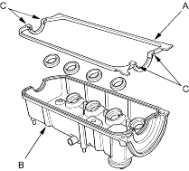
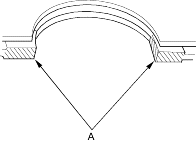
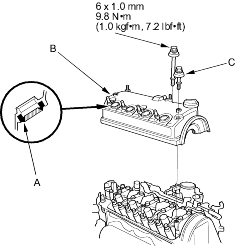

- Thoroughly clean the head cover gasket and the groove.
- Install the head cover gasket (A) in the groove of the cylinder head cover (B). Seat the head cover gasket in the recesses for the camshaft first, then work it into the groove around the outside edges. Make sure the head cover gasket is seated securely in the corners of the recesses (C) with no gap.

- Check that the mating surfaces are clean and dry.
- Apply liquid gasket, part No. 08C70-K0234M, 08C70-K0334M or, 08C70-X0331S to the head cover gasket at the four corners of the recesses (A).
NOTE: Do not install the parts if 5 minutes or more have elapsed since applying liquid gasket. Instead, reapply liquid gasket after removing old residue.

- Hold the head cover gasket in the groove by placing your fingers on the camshaft holder contacting surfaces (top of the semicircles). Set the spark plug seals (A) on the spark plug tubes. Once the cylinder head cover (B) is on the cylinder head, slide the cover slightly back and forth to seat the head cover gasket.

- Inspect the cover washers (C). Replace any washer that is damaged or deteriorated.